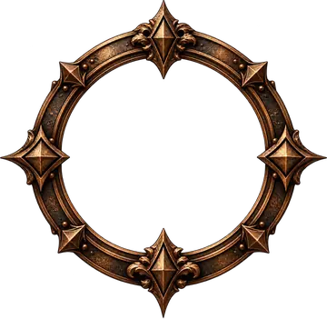
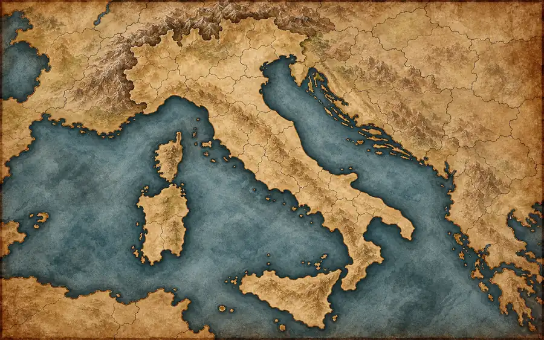

Community
Il bordo del medaglione esprime il prestigio competitivo. Tutte le community iniziano dal Bronzo.
Cartografia del Reame
Community, presidi e mercanti di Sorcery in Italia
Il Reame

Caricamento delle Alleanze…
Legenda

Il bordo del medaglione esprime il prestigio competitivo. Tutte le community iniziano dal Bronzo.
Categoria già predisposta. Il simbolo definitivo del Mercante è archiviato; i mercanti verranno collocati quando ne saranno forniti luogo e coordinate.
La dimensione rappresenta la presenza della community e resterà indipendente dal grado del medaglione.